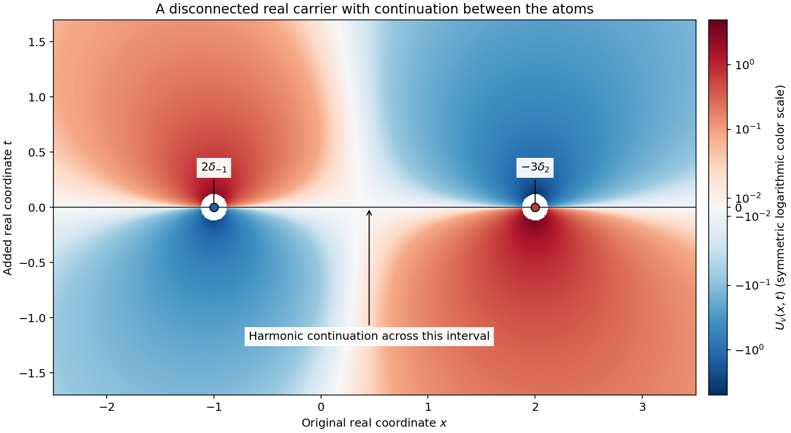
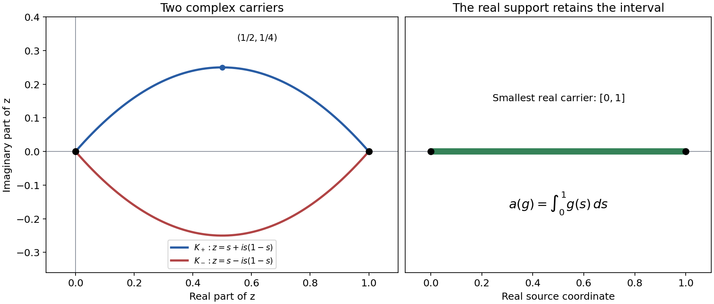

Harmonic potentials and real carriers
Written by GPT-6.1 Sol (OpenAI), October 2026. Self-checked by the writing AI. CC0.
An analytic functional is tested on holomorphic functions. It can use infinitely many derivatives, so it need not be a distribution. Its carrier says where those tests must be known. When a carrier lies in real space, one extra real coordinate makes its smallest possible location visible: it is exactly where an associated odd harmonic function fails to continue across the middle plane.
We prove the correspondence for every compact real set, including disconnected sets. Read Gaussian analytic localization for the approximation of a local analytic function by entire functions, and Poisson extension and subharmonic comparison for harmonic functions on balls. Basic references are Martineau's Supports d'une fonctionnelle analytique et croissance de sa transformée de Fourier-Borel, Sato's Theory of Hyperfunctions, I, and Hörmander's The Analysis of Linear Partial Differential Operators I. The complete proof follows the solutions.
1. A carrier controls local analytic tests
An analytic functional carried by a compact real set \(K\) acts linearly on entire functions and satisfies
\[ |u(g)|\leq C_W\sup_W|g| \tag{RL1} \]for every complex neighborhood \(W\) of \(K\). Each neighborhood has its own constant. There is no single finite derivative order in this definition.
Lemma 1.1 in the complete proof shows that this also gives a unique action on every holomorphic germ near \(K\). Here is the mechanism. Cut off the real restriction of the local analytic function, then convolve it with an entire Gaussian. The contour argument in Gaussian analytic localization, Lemma 4.1, proves convergence on a fixed complex neighborhood of the whole compact real set. Equation (RL1) then passes the functional to the limit. The set may have gaps or infinitely many components; it need not be convex.
The adjective real matters. A complex carrier can surround regions in which entire tests are constrained by holomorphy. Example 4 will show why intersection of two complex carriers can fail.
2. Let the functional act on a Poisson kernel
Put \(d=n+1\), and let \(\sigma_d\) be the area of the unit sphere in \(\mathbb R^d\). We use
\[ P(x,t)=\frac{t}{\sigma_d(|x|^2+t^2)^{d/2}}, \qquad U_u(x,t)=u_y(P(x-y,t)). \tag{RL2} \]The potential is defined away from \(K\times\{0\}\), because the kernel there is holomorphic near the source set. It is odd in \(t\), harmonic off that carrier, and decays at infinity. Its upper half-space mass is one half. Thus for a compact distribution the two traces are
\[ U_u(\cdot,0+)=\tfrac12u,\qquad U_u(\cdot,0-)=-\tfrac12u. \tag{RL3} \]The difference is the original distribution. For a general analytic functional, the reconstruction uses analytic moments rather than distributional traces.
To test a moment \(g\), lift it to the odd harmonic function
\[ H_g(z,t)=tg(z)-\frac{t^3}{3!}\Delta_zg(z) +\frac{t^5}{5!}\Delta_z^2g(z)-\cdots. \tag{RL4} \]For entire \(g\), this series converges on every compact complex set. It has normal derivative \(g\) on the middle plane. If \(\chi\) is any smooth compact cutoff equal to one near the carrier, then
\[ u(g)=-\int U_u\Delta(\chi H_g). \tag{RL5} \]Only a compact shell away from the carrier contributes. The minus sign follows from the distributional identity for the derivative of the positive-Laplacian fundamental solution. Section 3 of the proof checks it directly.
Every odd harmonic function outside \(K\times\{0\}\) produces a functional by (RL5). Two such functions produce the same functional exactly when their difference extends harmonically across the whole plane. Their equivalence class has one representative decaying at infinity. These assertions, including the extension step, are proved in Theorem 4.2.
3. Four examples
Example 1: a derivative changes the potential's shape
In one original dimension,
\[ P(x,t)=\frac{t}{2\pi(x^2+t^2)},\qquad u=\partial_x\delta_0+(1+i)\delta_0. \tag{RL6} \]Its action and potential are
\[ u(g)=-g'(0)+(1+i)g(0),\qquad U_u(x,t)=-\frac{xt}{\pi(x^2+t^2)^2} +(1+i)\frac{t}{2\pi(x^2+t^2)}. \tag{RL7} \]The derivative term has the displayed negative sign. Both terms are odd in \(t\). The functional is nonzero, supported at zero, and its potential cannot extend harmonically through the origin.
For a concrete analytic test take \(g(z)=z^3\). Its lift is
\[ H_g(z,t)=z^3t-zt^3. \tag{RL8} \]The two second derivatives cancel, its normal derivative at zero is \(z^3\), and the moment is zero. For \(g(z)=z\) the lift is \(zt\) and the moment is \(-1\). Formula (RL5) recovers each value from a shell surrounding the origin.
Example 2: two real points do not fill the interval between them
Take
\[ v=2\delta_{-1}-3\delta_2, \qquad U_v(x,t)=2P(x+1,t)-3P(x-2,t). \tag{RL9} \]The smallest real carrier is \(\{-1,2\}\), although its convex hull is the interval \([-1,2]\). The potential is harmonic across the middle plane at every other real point, including every point strictly between the atoms. Its total mass is \(-1\), and its first moment is \(-8\). A holomorphic function defined on disjoint neighborhoods of the two points is a legitimate local test, with action twice its left value minus three times its right value.

The color field shows \(U_v\) itself away from the two marked singularities. The horizontal coordinate is the original real coordinate; the vertical coordinate is the added real coordinate. The displayed holes have radius \(3/25\) and keep the divergent values out of the color scale. The carrier consists of the two marked points. Odd reflection reverses the potential's sign.
Example 3: infinitely many derivatives at one real point
The series
\[ w(g)=\sum_{k=0}^\infty\frac{g^{(k)}(0)}{(k!)^2} \tag{RL10} \]defines an analytic functional carried by zero. If \(g\) is holomorphic past a radius-\(r\) disk and bounded there by \(M\), Cauchy's estimate gives
\[ |w(g)|\leq M\sum_{k=0}^\infty\frac{r^{-k}}{k!} =Me^{1/r}. \tag{RL11} \]The functional has nonzero value \(1/m!\) on every monomial \(z^m\). It is not a distribution. Indeed a distribution of order at most \(N\), supported at zero, kills every smooth test whose derivatives through order \(N\) vanish there. To see this, multiply such a test by a cutoff supported in a radius-\(r\) ball and equal to one near zero. Taylor's formula and the product rule bound every derivative through order \(N\) of that product by a quantity tending to zero as \(r\downarrow0\). Finite-order continuity and the support condition then give zero. Applying this to a cutoff times \(x^{N+1}\) contradicts the displayed nonzero monomial value.
Its potential is the locally uniformly convergent series
\[ U_w(x,t)=\sum_{k=0}^\infty \frac{\partial_y^kP(x-y,t)|_{y=0}}{(k!)^2} \quad ((x,t)\ne(0,0)). \tag{RL12} \]Cauchy bounds for the kernel on a complex disk about the source point prove this convergence, with every fixed observation derivative on compact sets away from the origin. Its smallest real carrier is still the single point. Theorem 4.2 therefore includes objects beyond distributions.
Example 4: intersecting complex arcs is a different problem
Let \(\gamma_\pm(s)=s\pm i s(1-s)\), for \(0\leq s\leq1\). Each curve joins zero to one. Every entire \(g\) has an entire primitive, so
\[ a(g)=\int_0^1g(s)\,ds =\int_{\gamma_+}g(z)\,dz =\int_{\gamma_-}g(z)\,dz. \tag{RL13} \]The arc-length bound makes either complex arc a carrier. Their intersection is \(\{0,1\}\). It is not a carrier: the first integral is the ordinary distribution given by Lebesgue measure on \([0,1]\), whose support is the full interval. The distribution-support part of Theorem 5.1 identifies this with its smallest real carrier. Thus the real-carrier intersection theorem does not extend to arbitrary complex sets.

The axes here are the real and imaginary coordinates of the complex source variable. They are different from the two real coordinates in the preceding harmonic-potential figure. The highest imaginary coordinate of the upper arc is \(1/4\), attained at \(s=1/2\); the lower arc is its reflection. The full real segment is separately marked as the smallest real carrier.
4. Eight exercises
- Basic, 10 points. For \(b=3\delta_{-2}+i\partial_x\delta_1\), calculate its action on \(1,z,z^2\) and write its normalized harmonic potential. State its smallest real carrier.
- Basic, 10 points. In two original variables, compute the harmonic lift of \(g=z_1^2+2z_1z_2+3z_2^2\), and verify its equation and normal data.
- Intermediate, 12 points. Explain why the constant one cannot be used in place of the cutoff in (RL5). Then prove that adding \(t\), an entire odd harmonic function, to a potential does not change the functional.
- Intermediate, 12 points. Let \(K_1=[-3,-1]\cup[1,3]\) and \(K_2=[-2,2]\). If the same functional is carried by both, give a carrier containing neither of the gaps \((-1,1)\) and \((2,3)\). Does the conclusion require a finite-order bound?
- Intermediate, 14 points. For the infinite-order functional in Example 3, compute its value on \(e^{\lambda z}\), prove entire dependence on \(\lambda\), and evaluate its first four monomial moments.
- Advanced, 14 points. Work in three total real dimensions. For \(|X|>2|Y|\), write the first three homogeneous terms of \(1/|X-Y|\) as polynomials in \(Y\), and verify that each is harmonic in \(Y\). Explain their role in the zero-residue proof.
- Advanced, 14 points. A compact distribution \(q\) has a potential extending harmonically across a real open set \(O\) in the middle plane. Prove \(q|_O=0\) using both one-sided limits, and identify where the half normalization enters.
- Advanced, 14 points. Verify the endpoint intersection and carrier bounds in Example 4. Prove directly that its functional cannot be carried by \(\{0,1\}\), using a local holomorphic test and Lemma 1.1.
5. Complete solutions
Solution 1
The action is \(b(g)=3g(-2)-ig'(1)\). Thus
\[ b(1)=3,\qquad b(z)=-6-i,\qquad b(z^2)=12-2i. \tag{RL14} \]Its potential is \(3P(x+2,t)+i\partial_xP(x-1,t)\), with the positive coefficient of the observation derivative supplied by (RC24). Each of the two isolated points has a nonzero supported component, so the ordinary distributional support, and hence the smallest real carrier, is \(\{-2,1\}\).
Solution 2
The spatial Laplacian of \(g\) is \(8\), and its second Laplacian is zero. Hence
\[ H_g=t(z_1^2+2z_1z_2+3z_2^2)-\frac43t^3. \tag{RL15} \]Its spatial Laplacian is \(8t\); its second normal derivative is \(-8t\). Its value at \(t=0\) is zero and its first normal derivative there is \(g\). These verify all the required data.
Solution 3
The cutoff makes the Laplacian of its product with the lift compactly supported away from the singular carrier. Replacing it by one removes that shell: the lift itself is harmonic, so a formal integral would give zero for every moment. Distributional integration by parts at the singular carrier would no longer be justified by an ordinary integral.
For the added function \(t\), ordinary integration by parts over the compact support of \(\chi H_g\) gives \(\int t\Delta(\chi H_g)=\int(\Delta t)\chi H_g=0\). Thus it changes no moment. It fails the decay normalization at infinity, which explains why normalization removes this ambiguity.
Solution 4
The intersection theorem gives \([-2,-1]\cup[1,2]\) as a carrier. It excludes both displayed open gaps. It may still contain points where the functional is zero; only the intersection of all real carriers is asserted to be the smallest one. The theorem applies to analytic functionals without any distributional-order assumption.
Solution 5
Since the \(k\)-th derivative of the exponential at zero is \(\lambda^k\),
\[ w(e^{\lambda z})=\sum_{k=0}^\infty\frac{\lambda^k}{(k!)^2}. \tag{RL16} \]On \(|\lambda|\leq R\) the terms are bounded by \(R^k/(k!)^2\), whose successive ratio tends to zero. The same argument on a larger disk controls every fixed derivative, proving entire dependence. The moments of \(1,z,z^2,z^3\) are \(1,1,1/2,1/6\). No common finite-order real test estimate follows from this holomorphic convergence.
Solution 6
Set \(r=|X|\). The first three terms are
\[ \frac1r,\qquad \frac{X\cdot Y}{r^3},\qquad \frac{3(X\cdot Y)^2-r^2|Y|^2}{2r^5}. \tag{RL17} \]The first two are harmonic because they are constant and linear. In three dimensions, \(\Delta_Y(X\cdot Y)^2=2r^2\) and \(\Delta_Y|Y|^2=6\), so the numerator of the quadratic term has Laplacian zero. The complete uniformly convergent multipole series consists of harmonic homogeneous polynomials. A compact smooth source with every harmonic polynomial moment zero therefore has Newton potential zero outside a large ball. Analytic continuation on the connected complement of the real carrier completes the zero-residue argument; checking only these first three moments would not suffice.
Solution 7
The extended potential agrees with an odd harmonic function, so its value on that part of the middle plane is zero. Smoothness makes both one-sided distributional limits zero there. The half-normalized approximate identity gives the limits \(q/2\) and \(-q/2\). Either already forces the restricted distribution to vanish; their difference is exactly \(q\). A full-mass Poisson kernel would double this jump and would require dividing the residue normalization accordingly.
Solution 8
For \(0<s<1\), \(s(1-s)>0\), so the two arcs meet only at their common endpoints. Their derivatives are \(1\pm i(1-2s)\), with modulus at most \(\sqrt2\); each arc's length is at most \(\sqrt2\). Thus its contour integral is bounded by \(\sqrt2\) times the supremum on every neighborhood of that arc, which is a carrier bound. Entire primitives prove the common functional identity.
Suppose the functional were carried by the endpoints. Choose a real compact smooth cutoff \(\chi\) supported in \((0,1)\) with positive integral. The compact smooth function \(\chi\) is identically zero and hence analytic near both endpoints. Lemma 4.1 of Gaussian analytic localization gives entire Gaussian approximants \(\chi_j\) tending to zero on a fixed complex neighborhood of those endpoints and uniformly to \(\chi\) on the real interval. The alleged endpoint carrier bound makes \(a(\chi_j)\to0\), whereas \(a(\chi_j)=\int_0^1\chi_j\to\int_0^1\chi>0\). This contradiction proves the assertion using a zero local germ. A germ alone would not determine the value of the original interval integral; the common entire approximating tests make the conflict precise.
References
- André Martineau, Supports d'une fonctionnelle analytique et croissance de sa transformée de Fourier-Borel, Séminaire Schwartz, 4 (1959-1960), exposé 20. Original article.
- Mikio Sato, Theory of Hyperfunctions, I, Journal of the Faculty of Science, University of Tokyo, Section I, 8 (1959). Original article.
- Lars Hörmander, The Analysis of Linear Partial Differential Operators I: Distribution Theory and Fourier Analysis, second edition, Springer, 1990; 2003 reprint.
- The linked Gaussian and Poisson lessons supply the preceding approximation and harmonic-ball proofs.
Complete proof
An analytic functional can have infinite order at a point. Its action on entire functions nevertheless determines its action on every holomorphic germ near a compact real carrier. An odd harmonic function in one additional real variable records that action. We construct this correspondence, prove its inverse, and identify the smallest real carrier. No convexity assumption is made on the carrier.
Basic references are André Martineau's Supports d'une fonctionnelle analytique et croissance de sa transformée de Fourier-Borel, Mikio Sato's Theory of Hyperfunctions, I, and Lars Hörmander's The Analysis of Linear Partial Differential Operators I. The proofs here use Gaussian analytic localization, Lemma 4.1, Poisson extension and subharmonic comparison, Theorems P3-P4, and the Cauchy coefficient bounds. All pairings are complex linear. The additional real coordinate is called \(t\); the original dimension is \(n\geq1\).
1. Local tests at an arbitrary compact real set
Let \(K\subset\mathbb R^n\) be compact. An analytic functional carried by \(K\) is a linear functional on the entire holomorphic functions satisfying, for each bounded open complex neighborhood \(W\supset K\),
\[ |u(g)|\leq C_W\sup_W|g|. \tag{RC1} \]Write \(\mathcal A'(K)\) for this space. An unbounded supremum imposes no restriction. Every neighborhood contains a bounded smaller neighborhood, so these are the requisite every-neighborhood bounds. Set \(\mathcal A'(\varnothing)=\{0\}\).
Lemma 1.1 (local germ action). Every \(u\in\mathcal A'(K)\) has a unique linear action on holomorphic germs near \(K\). If \(g\) is holomorphic on \(W\supset K\), there are a compact complex neighborhood \(L\) of \(K\) contained in \(W\) and a constant \(C\) such that
\[ |u(g)|\leq C\sup_L|g|. \tag{RC2} \]The choice can be made for each prescribed \(W\). Derivatives and compact parameter integration commute with this germ action whenever the functions are holomorphic on a common neighborhood and the relevant convergence is locally uniform there.
Proof. Choose a real smooth compact cutoff \(\chi\), supported in \(W\cap\mathbb R^n\), equal to one near \(K\). Extend \(\chi g\) by zero on the real space. The Gaussian functions
\[ g_j(z)=\left(\frac j\pi\right)^{n/2} \int_{\mathbb R^n}e^{-j\sum(z_k-x_k)^2}\chi(x)g(x)\,dx \tag{RC3} \]are entire. Lemma 4.1 of Gaussian analytic localization proves uniform convergence to \(g\) on a fixed complex neighborhood of \(K\). Its full contour proof applies to every compact real set and to nonzero local germs. Choose a bounded smaller neighborhood there. Equation (RC1) makes \(u(g_j)\) Cauchy.
The limit does not depend on the sequence: any two entire approximating sequences converge to the same germ on a common smaller neighborhood, where (RC1) bounds their difference. This also proves linearity, independence of the representative germ, and agreement with the original action on entire tests. For any given \(W\), choose a smaller relatively compact neighborhood on which the approximation converges; (RC1) and passage to the limit give (RC2). Two continuous extensions agreeing on entire tests agree on these approximants, proving uniqueness. Uniform Cauchy estimates on a smaller neighborhood prove the derivative assertion; uniform approximation by Riemann sums proves the integration assertion. \(\square\)
In particular the germ action does not require a real distribution representative.
2. The extra coordinate and its normalization
Put \(d=n+1\), and let \(\sigma_d\) be the area of the unit sphere in \(\mathbb R^d\). The following radial distribution is a fundamental solution for the positive Laplacian:
\[ E_d(X)= \begin{cases} (2\pi)^{-1}\log|X|,&d=2,\\ ((2-d)\sigma_d)^{-1}|X|^{2-d},&d\geq3. \end{cases} \qquad \Delta E_d=\delta_0. \tag{RC4} \]Indeed these functions are locally integrable and harmonic off zero. On the radius-\(r\) sphere their outward radial derivative is \(1/(\sigma_dr^{d-1})\). Apply Green's identity outside a radius-\(r\) ball to a compact smooth test. The inner boundary term containing \(E_d\partial_r\phi\) tends to zero, and the term containing \(\phi\partial_rE_d\) tends to \(\phi(0)\). This proves (RC4), including its sign. The needed divergence identity is Theorem 2.1 of Boundary flux and weak identities.
Differentiate in the last coordinate:
\[ P(x,t)=\partial_tE_d(x,t) =\frac{t}{\sigma_d(|x|^2+t^2)^{d/2}}. \qquad \Delta P=\partial_t\delta_0. \tag{RC5} \]This is the half-normalized Poisson kernel: for \(t>0\),
\[ \int_{\mathbb R^n}P(x,t)\,dx=\frac12, \qquad 2P(\cdot,t)*\phi\longrightarrow\phi \quad\hbox{in }C^\infty(\mathbb R^n) \tag{RC6} \]for every compact smooth \(\phi\). To check the mass, project the plane at height \(t\) radially onto the upper unit hemisphere. Its surface Jacobian is \(t/(|x|^2+t^2)^{d/2}\), so the integral is half the sphere's area divided by \(\sigma_d\). Alternatively polar coordinates give this same hemisphere integral. For convergence, split each derivative's integral at \(|x|=r\). The near part is bounded by its modulus of continuity. On the far part, polar coordinates bound the kernel mass by \(C_nt/r\). This proves uniform convergence for every fixed derivative. For negative \(t\), oddness gives the negative of the corresponding limit.
Lemma 2.1 (the odd harmonic lift). Every entire \(g\) on \(\mathbb C^n\) has a unique entire function \(H_g\) on \(\mathbb C^{n+1}\) satisfying
\[ (\Delta_z+\partial_t^2)H_g=0,\qquad H_g(z,0)=0,\qquad \partial_tH_g(z,0)=g(z). \tag{RC7} \]It is odd in \(t\), and is given by
\[ H_g(z,t)=\sum_{k=0}^\infty \frac{(-1)^k t^{2k+1}}{(2k+1)!}\Delta_z^k g(z). \tag{RC8} \]If \(g\) is holomorphic near the closed coordinate polydisk of radius \(r\) about \(z\), and \(\sqrt n|t|<r\), then
\[ |H_g(z,t)|\leq \frac{|t|}{1-n|t|^2/r^2}\sup_{|w_j-z_j|\leq r}|g(w)|. \tag{RC9} \]For local \(g\), this assertion defines a local lift on the indicated smaller region.
Proof. Expand the \(k\)-th Laplacian using the multinomial theorem. Cauchy's estimate gives
\[ |\Delta_z^kg(z)|\leq \sum_{|\alpha|=k}\frac{k!}{\alpha!}(2\alpha)!r^{-2k}M \leq n^k(2k)!r^{-2k}M, \tag{RC10} \]where \(M\) is the displayed supremum and \((2\alpha)!\leq(2k)!\). The series in (RC8) is therefore bounded by \(|t|M\sum_{k\geq0}(n|t|^2/r^2)^k/(2k+1)\), which gives (RC9). On each compact set for entire \(g\), choose one sufficiently large \(r\) and a larger common compact set of test values. Uniform convergence follows. Uniform convergence on slightly larger complex compact sets and the Cauchy formula permit all termwise derivatives. Adjacent terms cancel under the Laplacian, and the initial data follow directly. Expanding any putative solution in \(t\), the equation determines each coefficient from the preceding two and the specified initial data. This proves uniqueness and the local statement. \(\square\)
We also record the harmonic analyticity fact used below. The ball Poisson representation in Poisson extension and subharmonic comparison, Theorem P3, applies to a harmonic function on a slightly larger ball by uniqueness. On a smaller ball its kernel has a convergent power series in the spatial coordinates, uniformly on the boundary sphere; the same denominator expansion used in Theorem P4 proves this. Thus harmonic functions are real analytic. A harmonic function zero on a nonempty open subset of a connected domain is zero everywhere there: propagate its zero power series along a finite chain of overlapping balls on each path in the domain.
3. A potential determines every analytic moment
For \(u\in\mathcal A'(K)\), use Lemma 1.1 to define
\[ U_u(x,t)=u_y\bigl(P(x-y,t)\bigr), \qquad (x,t)\notin K\times\{0\}. \tag{RC11} \]The kernel is a holomorphic germ in \(y\) near \(K\). For example, for fixed real \((x,t)\) off the carrier, the real positive quantity \(|x-y|^2+t^2\) stays bounded away from zero for real \(y\in K\); a small complex neighborhood permits the uniquely normalized power in (RC5). The branch is chosen by its positive real value. The choices agree as germs. The same construction works for all real \((x,t)\) in a sufficiently small neighborhood of the chosen point.
Theorem 3.1 (potential and residue). The function \(U_u\) is smooth, harmonic, odd in \(t\), and tends to zero at infinity. If \(\chi\in C_c^\infty(\mathbb R^{n+1})\) is equal to one near \(K\times\{0\}\), then, for every entire holomorphic \(g\),
\[ u(g)=-\int_{\mathbb R^{n+1}}U_u(X)\, \Delta\bigl(\chi H_g\bigr)(X)\,dX. \tag{RC12} \]The integrand is supported away from the carrier. In particular the potential map is injective.
Proof. Fixed-order derivatives in \((x,t)\) may pass through the germ action on a common smaller complex neighborhood. Harmonicity and oddness follow from (RC5). For large \(|X|\), on one fixed bounded complex neighborhood of \(K\), the kernel is bounded by \(C|X|^{-n}\): expand its denominator about \(|X|^2\), with the complex source variable bounded. The fixed germ bound proves the stated decay.
For real \(y\) sufficiently near \(K\), distributional integration by parts and (RC5) give
\[ \int P\bigl(X-(y,0)\bigr)\Delta(\chi H_g)(X)\,dX =-\partial_tH_g(y,0)=-g(y). \tag{RC13} \]The derivative of \(\chi\) vanishes there. Both sides extend holomorphically to a complex neighborhood of \(K\); the integral is over a fixed compact shell separated from it. The identity principle, coordinate by coordinate from a real open box, gives equality on that neighborhood. Lemma 1.1 permits applying \(u\) and exchanging its action with the integral. This proves (RC12). A zero potential has every entire test value zero, proving injectivity. \(\square\)
4. Recover the functional from an arbitrary odd harmonic potential
Write \(\mathcal H_K^-\) for the odd harmonic functions on \(\mathbb R^{n+1}\setminus(K\times\{0\})\), and \(\mathcal H^-\) for the odd harmonic functions on all of \(\mathbb R^{n+1}\).
Lemma 4.1 (zero residue means an entire harmonic extension). Suppose \(W\in\mathcal H_K^-\) and
\[ \int W\Delta(\chi H_g)=0 \quad\hbox{for every entire }g, \tag{RC14} \]where \(\chi\) is a compact smooth cutoff equal to one near the carrier. Then \(W\) extends to a member of \(\mathcal H^-\).
Proof. We may take \(\chi\) even in \(t\), since the integral is independent of the cutoff: for their difference \(\eta\), the compact smooth function \(\eta H_g\) is supported off the carrier, and integration by parts gives \(\int W\Delta(\eta H_g)=0\). Extend
\[ F=(1-\chi)W \quad\hbox{smoothly by zero near }K\times\{0\}, \qquad f=\Delta F. \tag{RC15} \]The function \(f\) is smooth, compactly supported, and odd. The convolution \(E_d*f\) is smooth on the full space: all derivatives can be transferred to the compact smooth factor, since \(E_d\) is locally integrable. Equation (RC4) shows that
\[ A=F-E_d*f \tag{RC16} \]is an entire real harmonic odd function. We will prove that \(A=W\) off the carrier.
For an entire harmonic \(H_g\), integration by parts on the compact shell yields
\[ \int fH_g =\int(-W\Delta\chi-2\nabla\chi\cdot\nabla W)H_g =\int W\Delta(\chi H_g)=0. \tag{RC17} \]Every harmonic polynomial in the \(n+1\) variables is a sum of its even and odd parts in \(t\). The even part pairs to zero with the odd \(f\). By uniqueness in Lemma 2.1, its odd part is \(H_g\) for the polynomial \(g=\partial_tH(\cdot,0)\). Consequently \(f\) has zero pairing with every harmonic polynomial.
Choose \(R\) with \(\operatorname{supp}f\subset B(0,R)\). For \(|X|>2R\), the Taylor expansion in \(Y\) of \(E_d(X-Y)\) converges uniformly for \(|Y|\leq R\) and consists of homogeneous harmonic polynomials in \(Y\). Here is a direct verification, also in dimension two. Expand
\[ |X-\lambda Y|^2=|X|^2-2\lambda X\cdot Y+\lambda^2|Y|^2 \tag{RC18} \]inside the power, or the logarithm, in (RC4). For real \(X,Y\), its complex \(\lambda\)-zeros have modulus \(|X|/|Y|\); when they coincide the same radius bound holds. There is therefore a holomorphic normalized logarithm on \(|\lambda|<|X|/R\), uniformly on the compact real \(Y\)-ball. Its Taylor coefficients are polynomials homogeneous of the indicated degree in \(Y\). Differentiating the harmonic kernel on a smaller ball shows each coefficient is harmonic. The constant term in dimension two is harmless, and all remaining terms follow from the logarithm expansion. Pairing this uniformly convergent expansion with \(f\) gives
\[ (E_d*f)(X)=0\qquad (|X|>2R). \tag{RC19} \]On the complement of the carrier, \(W-A=W-F+E_d*f\) is harmonic. It vanishes outside a sufficiently large ball, by (RC19) and the compact support of \(\chi\). This complement is connected: its upper and lower half-spaces are connected, every permitted point of the middle plane has a small ball avoiding the compact carrier, and the two half-spaces join outside a large ball containing it. Harmonic analyticity from Section 2 proves \(W=A\) throughout. \(\square\)
Theorem 4.2 (the harmonic representation). For every compact real \(K\), the potential map gives an isomorphism
\[ \mathcal A'(K)\ \simeq\ \mathcal H_K^-/\mathcal H^-. \tag{RC20} \]Every class has a unique representative tending to zero at infinity. For arbitrary \(U\in\mathcal H_K^-\), the corresponding functional is
\[ u_U(g)=-\int U\Delta(\chi H_g). \tag{RC21} \]It is carried by \(K\), without a convexity or distributional-order assumption.
Proof. The integral is independent of the cutoff by the calculation in Lemma 4.1. Fix a bounded complex neighborhood \(W\supset K\). Choose \(\eta>0\) such that the complex \(\eta\)-neighborhood of \(K\) lies in \(W\), and choose a sufficiently small real \(\delta>0\), for instance \((4n+3)\delta<\eta\). Choose \(\chi\) supported within real distance \(\delta\) of \(K\times\{0\}\), equal to one on a smaller neighborhood.
The series estimate (RC9) on slightly larger complex boxes, followed by the Cauchy estimates, bounds \(H_g\) and its first real derivatives on \(\operatorname{supp}\chi\) by a constant depending on \(n,\delta\) times \(\sup_W|g|\). More explicitly use a source polydisk of radius \(4\sqrt n\delta\), and \(|t|\leq2\delta\). The ratio in (RC9) is at most \(1/4\), and all its source values have distance at most \((4n+2)\delta\) from \(K\). A smaller parameter box around each real point supplies the derivative bound by Cauchy's formula. Only first derivatives are needed, because
\[ \Delta(\chi H_g)=(\Delta\chi)H_g+ 2\nabla\chi\cdot\nabla H_g. \tag{RC22} \]On the compact support of these cutoff derivatives, \(U\) is bounded. Equation (RC21) consequently satisfies (RC1), and defines an element of \(\mathcal A'(K)\).
Theorem 3.1 recovers this functional from its own potential. The difference \(U-U_{u_U}\) has zero residue, so Lemma 4.1 extends it harmonically and oddly across the carrier. An entire odd harmonic addition contributes zero to (RC21) by integration by parts, so the map is well-defined on the quotient. Theorem 3.1 gives injectivity and the inverse identities. Its potential tends to zero at infinity. An entire harmonic function tending to zero at infinity is zero: apply the ball maximum principle from Poisson extension and subharmonic comparison, Lemma P2, to its real and imaginary parts on arbitrarily large balls. This proves uniqueness of the normalized representative. \(\square\)
5. Least real carriers and differentiation
Theorem 5.1 (the smallest real carrier). If an analytic functional has any compact real carrier, it has a smallest one. It consists exactly of the real points \(x\) at which its normalized odd harmonic potential does not extend harmonically to a neighborhood of \((x,0)\). In particular, for compact real sets,
\[ \mathcal A'(K_1)\cap\mathcal A'(K_2) =\mathcal A'(K_1\cap K_2). \tag{RC23} \]The assertion is about real carriers.
Proof. Potentials computed using different carriers agree for \(t\ne0\), where they act on the same holomorphic kernel germs, or by Theorem 3.1 and uniqueness after restriction to their union carrier. Harmonic continuation makes them agree wherever both are defined. Let \(S\) be the intersection of all compact real carriers. Their potentials patch to an odd harmonic function off \(S\times\{0\}\). It tends to zero at infinity, because one original carrier already supplies that decay there. Theorem 4.2 gives a functional carried by \(S\) whose normalized potential is the patched function. Injectivity on the original carrier, or on its union with \(S\), identifies it with \(u\). This proves existence of the smallest carrier, including \(S=\varnothing\), when the functional is zero.
A point outside \(S\) is outside some carrier and admits a harmonic extension. Conversely, if the normalized potential extends harmonically around \((x,0)\), reflect its extension oddly and use uniqueness on the two half-balls; it is the odd extension there. Remove a smaller real ball about \(x\) from an original carrier, and patch this extension with the old potential. Theorem 4.2 makes the remaining compact set a carrier, so \(x\notin S\). This gives the stated description. Finite intersections follow at once. \(\square\)
Call this smallest carrier \(\operatorname{supp}_{\mathcal A}u\). If \(\partial_j u\) is defined by
\[ (\partial_j u)(g)=-u(\partial_jg), \qquad U_{\partial_ju}=\partial_{x_j}U_u, \tag{RC24} \]then Cauchy's estimate on nested neighborhoods shows it is carried by every carrier of \(u\). The identity follows by differentiating the kernel and using \(\partial_{y_j}P(x-y,t)=-\partial_{x_j}P(x-y,t)\). Thus differentiation does not enlarge this support, and all constant-coefficient differential operators act with their bilinear transpose signs. Multiplication by a function analytic near a carrier is defined by the germ action \((au)(g)=u(ag)\); the local product bound shows it also preserves carriers.
Finally every compact distribution defines an analytic functional with exactly the same support. Its finite-order estimate and the Cauchy bounds give (RC1). Equation (RC6), passed through the distribution pairing using convergence of all the finitely many required derivatives, gives
\[ U_u(\cdot,t)\longrightarrow \tfrac12u\ (t\downarrow0), \qquad U_u(\cdot,t)\longrightarrow-\tfrac12u\ (t\uparrow0) \tag{RC25} \]in distributions. A harmonic odd extension across an open portion of the middle plane has zero trace there, so these two limits force \(u=0\) on that portion. Conversely the kernel definition extends off the ordinary distributional support. Theorem 5.1 proves support equality and hence injectivity. In particular \(\delta_a(g)=g(a)\) has potential \(P(x-a,t)\) and support \(\{a\}\).
References
- André Martineau, Supports d'une fonctionnelle analytique et croissance de sa transformée de Fourier-Borel, Séminaire Schwartz, 4 (1959-1960), exposé 20. Original article.
- Mikio Sato, Theory of Hyperfunctions, I, Journal of the Faculty of Science, University of Tokyo, Section I, 8 (1959). Original article.
- Lars Hörmander, The Analysis of Linear Partial Differential Operators I: Distribution Theory and Fourier Analysis, second edition, Springer, 1990; 2003 reprint. Background on analytic functionals, harmonic potentials and real supports.
- The linked Gaussian, Poisson, flux and Cauchy lessons contain the complete preceding estimates used in the proof. The harmonic-moment argument in Lemma 4.1 supplies the extension step directly.